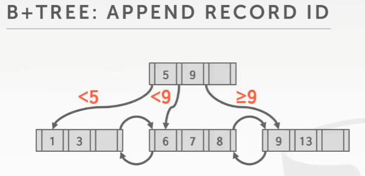
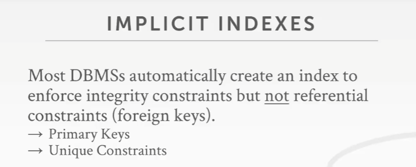
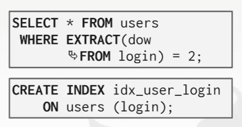

注: 本文首发我的 b 站专栏文章CMU 15-445/645-笔记-08-树索引-part2
课程目标
B+ Tree: 重复的 Key
在索引中插入的 key 后面追加它所对应的 tuple 的 record ID
例子
注意，数据库系统实际所保存的是 key 和 record ID 这样的组合，所以这里 insert 6 先做的是前缀搜索
比如现在要插入 6，找到对应的叶子节点
因为 6 <= insert 6 < 7，所以要对这个叶子节点进行拆分
大部分人会选择实现第 1 种方式，因为这种方式不会对数据结构进行任何改动，不管是唯一索引还是非唯一索引，所有东西都和之前的一样。缺点就是要将 record ID 作为 key 的额外元素保存起来，而这就会增加索引的 size
将重复的 key 保存在 overflow 的叶子节点上，但这种方式是违反 B+ Tree 设计规则的。这里并不是将叶子节点进行水平扩展去容纳新的 entry，而是将叶子节点进行垂直拓展，在给定的叶子节点下面添加这些 overflow page ，即跟之前讨论的 chained hash 表差不多的思路
比如现在要插入 6，找到对应的叶子节点现在不需要对那个叶子节点做拆分，而是在这个节点上加一个 overflow page，然后把 6 插入到这个 overflow page 上，该叶子节点只需要有一个指针指向这个 overflow page 即可
继续插入 7 和 6，都是在这个 overflow page 下，注意此时的 overflow 存放 6 和 7 的顺序，它是无序的，但这是 OK 的
第 2 种方式更复杂，因为这就意味着必须处理沿着叶子节点进行扫描时所发生的情况，比如如何向下处理这些 overflow page。
默认情况下，在 MySQL 和大多数数据库系统中，如果创建了一个索引，那么这个索引使用的就会是 B+ Tree 或者其他 tree 数据结构
在 PostgreSQL 中，可以强制让它使用 hash 索引，比如这样的语句
CREATE INDEX idx_emails_hash ON emails USING HASH (email);
也可以强制使用 B+ Tree 索引，比如如下的语句
CREATE INDEX idx_emails_tree ON emails USING BTREE (email);
但当执行查询时，query planner 在某些查询上并不会使用索引，但在执行其他查询时会去使用索引。如果使用的是 hash 索引，那么就必须使用完整的 key 或者该 key 中完整的元素去做查找
比如在 hash 索引里做查询时，可以使用 '00@00.00‘ 这种精确的匹配的查询条件去查，但是使用 ‘00@00%’ 这种模糊匹配就不行
顺便，如果无法通过索引来找到它们想要的，那么数据库系统会始终默认使用循序扫描来查找
如果查询语句中有一个 OR 子句，那么可以看到这里能够使用 2 个索引来进行扫描，即用其中一个索引来尝试找到想要找的数据，接着再使用另一个索引来，然后将它们的结果合并在一起
而这就是 bitmapOr 所做的事情
bitmap index（位图索引）会尝试找到所有匹配的结果，然后通过存储的 record ID 集合来维护这个庞大的 bitmap，通过该 bit 可以拿到所匹配的 record 的 offset 值。再然后它将这 2 个索引所产生的结果放在一起，并生成输出结果
table clustering 指的是，通过聚簇索引来对表中的 tuple ，强制按照某种顺序排列
使用 CLUSTER 命令会强迫 PostgreSQL 根据索引定义来对整个表重新排序
CLUSTER emails USING idx_emails_tree
但这是一个一次性的 操作
在 MySQL、SQL Server 和 Oracle 中使用聚簇索引时，能确保不管往数据库中插入的值的顺序是怎么样的，底层的物理存储会是有序的
那么为什么有些时候在不适用索引的情况下，查找的时间复杂度依然是 O(log n) 呢？因为当整张表的 tuple 是根据某个字段进行有序插入的，那么就可以根据二分来对某一条数据进行查找
为什么不使用 tuple 插入时的时间戳来代替 record ID 这样的设计呢？
因为可能会遇上闰秒和闰年，以及如果本地始终比较慢，先插入了一些数据，经过时间校正后又插入一波数据，那么时间戳可能存在重复
Implicit 索引

所有数据库系统都会自动为主键做唯一性约束
当创建表时，如果主键唯一，那么和运行上图中的那些命令的效果是一样的
即当创建表时，它就会去创建这些索引
而对于外键来讲，数据库就不会做这些事情了
这种做法会报错，因为在没有索引的情况下，无法强行使用引用完整性约束（referential integrity constraint）
相反，只能在该处添加一个 UNIQUE 关键字，这会让数据库自动去构建一个索引
部分索引（Partial Indexes）
对于许多应用程序而言，可能不需要在整个表上使用索引，而是在某些数据子集上进行索引
比如如下的语句，只在对应的条件下才建立索引
如果其他查询中没有这个 WuTang，那就没法使用索引
这种方式非常常见，比如可以通过不同索引将不同日期范围的数据分开，在每个月份上建立索引，这样可以以想要的顺序在该月份中进行快速查找
使用一个部分索引可以避免一堆不需要的数据去污染 Buffer 池，同时树的高度也会变得更低，这样就有利于更快的查找
覆盖索引（Covering Indexes）
覆盖索引指的是，响应查询需求的结果中所需要的所有的字段，都能在索引本身中找到
不需要将一个索引声明为覆盖索引，数据库系统会自动帮你做这件事
比如下面的查询，可以从这个索引中准确地找到 a 和 b 字段，也不需要去看实际的 tuple 是什么样的（可以直接越过查询 tuple，因为索引已经给出来了？注意这里要找的 tuple 都是放在表堆 table heap 里面的，它们并不是叶子节点，叶子节点都是索引。找 tuple 的过程是指，通过 B+ Tree 拿到 page ID 和 offset，然后到 Buffer 池中找到这个 page 对应的 tuple）
在通过 page ID 和 page 表进行查找时，可能需要一次磁盘 I/O，而覆盖索引无须这样去查看底层 tuple
索引包含列（Indexes include colunms）
在上图这个例子中，在 a 和 b 上建立了索引，所有的 inner node 上只保存了 key a 和 b，当进行查找时，只需对 a 和 b 进行检查即可，但当落到叶子节点上时，也能得到在该叶子节点上每个 entry 的 c 属性的值
如上图，先对 a 进行查找，然后顺着往下，当沿着叶子节点进行扫描时，可以看看打包放在叶子节点中 c 属性的值，然后根据条件来判断该值，找到对应的 tuple
尽管可以通过 where 里面的 c 来进行查找，但它不在 inner node 中，所以这并不会让索引整体的 size 变得更大
函数式/表达式索引（Functional/Expression Indexes）
它的思路是，通过该 key 衍生出来的某些值而不是通过 key 自身的值来进行查找

注意，dow 指的是 day of week，这里表示的是从 login 字段中提取出星期几，2 就是星期二，0 就是星期日，1 就是星期一
而这样创建索引是不对的，因为创建索引时没给出条件，即 users(login) 中，哪些条件是符合 dow From login 为星期二的 tuple 的，没给出条件就会为所有的这些 tuple 创建索引

所以所有放在 where 里的东西，都可以对其建立索引
在整个树形结构中，key 会被多次复制，同时为了判断该 key 是否存在于表中，就必须跑到叶子节点上，遍历它们，因为 inner node 可能会保存那些不再存在于 tree 中的 key 的拷贝，它们要用这些 key 当作路标
如果 Buffer 池中并没有缓存要找的叶子节点中所在的 page，那么就会出现 page miss 的情况，那么在向下遍历 tree 时，就会得去磁盘上对每个节点进行查找
所以，如果不去遍历 tree 的底部叶子节点，在 tree 的顶部就能知道 key 是否存在于表中的话，就很棒了
而这就是 Trie 索引能够去做的事情
Trie 索引
radix tree 是 trie tree 的一种特殊版本，没人会在数据库中使用 trie，他们用的都是 radix tree
trie tree 会保存 key 的 digit，即 key 中的某些原子子集，比如一个字节或者一个 bit 之类的
思路是，将所有的 key 分解，将这些分解后的 digit 一个个地存放在 tree 中的不同层里，因为可能会遇到重复的 digit，那么在每一层保存它一次即可
一个 key 就对应一条路径，不同的遍历不同的向下路线就能将这些 digit 拼凑出不同的 key 来
B+ Tree 是 1973 年被 IBM 发明出来的，而 Trie Tree 是由一名法国老哥在 1959 年发明出来的，但他没有以此来命名这个 Tree，而是由另一位 CS 领域的著名研究人员 Edward Fredkin，在一两年后，他给这个 Tree 结构起名叫 Trie，它是 Retrieval Tree 的简写
Trie 索引的属性
Trie 的形状取决于 key 的分布以及它们的长度，它是一个确定的数据结构，不管插入 key 的顺序如何，最终都会得到相同的物理数据结构也就是节点布局
而 B+ Tree 则不同，它如果进行重建了，将这些 key 插入到另一个 tree 中，最终可能会得到不同的节点布局
Trie Tree 不需要像 B+ Tree 那样进行重新平衡（垂直层面可能可以进行平衡，但水平层面确实不行）
Trie 中，操作的复杂度都是 O(K)，K 指的是 key 的长度
对于点查询来讲，Trie 的速度要比 B+ Tree 快的多，但如果是扫描，那么就相反，因为 Tire 需要通过回溯来进行查找
Trie Key Span
span 这个术语可以以同样的方式用在 B+ Tree 的节点上
span 其实就是树枝向外分叉的个数，即在树的每层每个节点中 digit 的个数
span 被用来决定是否对每个节点进行扇出（fan-out）操作
比如 fan-out 的量为 n，那么就是每个节点最多有 n 条路线，这会决定 Trie 在每一层所保存的 digit 的数量
一个 1 bit trie 的例子
这个位置，所有 key 的前 10 位都是 0，并且它们向下走的方向都是一致的，而且前 10 位里面没有 1
但是到达上图中的那个位置时，对于 K10，它在这个位置的数字是 0，所以它就该走左边这条路线，对于 K25 和 K31，它们在这个位置的值都是 1，所以它们应该走右边这条路线
现在来看上图中 K10 的剩余部分，走的路线就是 1010，走到尽头就是一个 record ID，它指向了对应的 tuple
而对于另一边也是一样的
查找思路和普通的 trie 都差不多，这里只是比对 1 bit
实际上这里可以有优化的点，比如，如何减少 Trie 的 size 呢？
不需要使用空间来标记这些 0 和 1
它实际上应该像上图那样，要做的只是保存这些指针。如果 bit 是 0，那么它的 offset 也是 0，如果 bit 是 1，那么它的 offset 也是 1
这就是水平压缩，它能减少每个 Trie 节点 size 的大小
那么另一种压缩方式是啥呢？
一旦到了图中画橘色框的位置，就没有其他 key 能匹配这些路径了，那么橘框位置就无须存储任何东西（这些可以用栈来存储），因为路线已经出来足以分辨哪些是 K10、K25 和 K31
上图中，从左往右，第一个 Tuple Pointer 处那个位置，只匹配了 K10 这个 key
注意：这里可以理解为一种懒比较策略，在比较前 11 位 bit 时，就可以将 K10 从 K25 和 K31 中分辨出来，而比较到前 13 位时，就可以将 K25 和 K31 分辨出来，而没有必要再继续一位一位地比较下去了
是垂直压缩，即移除掉了无用分支路径，看似有多条路径，但只有 1 条是存储了明确的 key 的路线
对 Radix Tree 进行修改
insert HAIR
delete HAT
delete HAVE
删除 HAVE 后可以选择将 IR 和 A 放在一起
德国的 Tableau 推出了一款叫 Hyper 的系统，它能够兼容 PostgreSQL，而这个系统是基于 Trie 构建出来的，
对于 B+ Tree 和 hash 表来讲，当用它们进行关键字搜索时，效果都不太好，因为这里面属于模糊查找，即要找的是某个属性中的一个子元素
对于 B+ Tree 来讲，在单个属性中，必须使用该属性完整的值进行查找，不能只使用它里面的部分值进行查找，比如它的前 16 bit
如果试着在 content 这个字段上构建索引，会是一个 bad idea，因为它会尝试使用表中这个属性里的 整个内容，来构建出 B+ Tree，然后有些 content 的 size 是按照 KB 来算的
这样做的结果就是，根据一个 key 做查找时，会返回整篇文章，这无疑是很蠢的
倒排索引（Inverted Indexes）可以解决这个问题
倒排索引（Inverted Indexes）
aka 全文搜索索引（full-text search index）/ 词语索引（concordance）
倒排索引会将 word（这里指文字/单词，不是 CPU 中的字节序列） 映射到英语或者其他自然语言的词汇中，映射到包含这些单词的 record 上
全文搜索数据库有很多，比如那个最出名的 ElasticSearch，它是建立在 Lucene 之上的 DBMS，而 Lucene 是由一个发明了 Hadoop 的人编写的，ElasticSearch 为搜索时用到的索引提供了一个服务端接口工具。Sphinx 也用到了 Lucene。Xapain 是一个 C++ 标准库，也是用来进行全文搜索和索引查找的，比 MySQL 的全文搜索索引好
查询类型
以下几种查询类型都无法在 B+ Tree 中进行，但可以在倒排索引中进行
- 词组搜索
- 近似搜索
- 通配符搜索
如何去构建倒排索引
最简单的方式就是将这个单词映射到一个 record ID 上，也可以将这个单词周围的其他单词也加进去，距离其他单词由多远这样的信息也可以加进去
如果倒排索引是内置的，那么每次更新时要确保更新了倒排索引
如果倒排索引是外置的，可以将它作为计划任务来执行，或者是将更新推送给对应的系统，比如 ES通常更新是分批进行的，因为对倒排索引进行更新的代价非常高昂
结论
这里还有另一类索引没有讨论，比如地理空间索引（Geo-Spatial Indexes），R-Tree，Quad-Tree 和 KD-Tree，这些在视频数据库和图数据库中非常常见，CMU 15-826 有对应的内容
倒排索引相关课程在 CMU 11-442/11-642，其实也就是搜索引擎的内容